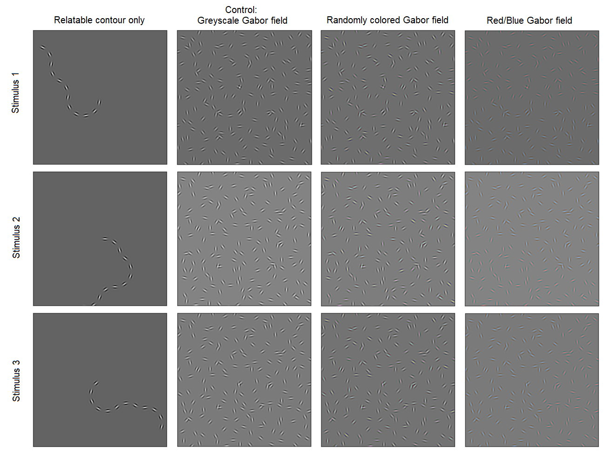

9.35 Illusion Laboratory
Spring 2023 Vision Lab

How do color-based grouping cues affect the relatability of Gabor filter contours?
Field et al. (1993) demonstrated that humans can perform contour integration by identifying a relatable path of Gabor patches within a randomly oriented field. This result was used as evidence for an "association field" in the human brain that integrates across nearby filters oriented in a similar direction, giving the percept of continuity. In this illusion, we investigate how several types of grouping-by-color cues affect orientation-based contour integration, in order to find out whether contour relatability and color cues lie on the same level of abstraction in our perceptual system.
We create three conditions. The first is the standard Gabor field images as created by Field et al. (1993) [1], which we use as a control. In the second condition, we randomly color the Gabor patches. In the third condition, we choose a line through the Gabor field which bisects the relatable contour; we then color one side blue and one side red. We also consider three stimuli exemplars, with different contours and fields (Fig. 1).
Figure 1. From left to right: the relatable contour "snake", the greyscale control condition, randomly colored Gabors, and Red/Blue Gabors. The rows represent three different exemplars.
It seems that the random color condition does not significantly affect contour integration—the task of detecting the relatable contour is not much more difficult than in the greyscale control condition. However, splitting the field into red and blue creates a distinct color-based separating line, which makes it more difficult to identify the contour as it crosses the line. Oftentimes, the contour on each side can be individually recognized, but it can be difficult to see the entire contour at once without individually seeing the red and the blue contours.
Lastly, we consider an adversarial condition, where we color a non-relatable path of Gabor patches a different color from the rest, forming a path that diverges from the relatable contour path (Fig. 2). In this case, we find that grouping by color appears to dominate over grouping by relatable contour; the colored path pops out much more than the relatable contour path.

Figure 2. Adversarial condition for Stimulus 2.
In the control condition, the relatable contour pops out as the most noticeable feature. Even in the colored conditions, if we specifically look for the relatable contour, we can still see it and perceive it as continuous. From these results, we could argue that the mechanisms for grouping by relatability and grouping by color do not seem to interfere with each other, as both percepts can coexist. However, when color provides a salient enough grouping (Blue/Red and adversarial conditions), color jumps out more than a relatability grouping. One possible explanation is that high spatial detail is not required to differentiate colors, whereas you need to look more carefully to perceive all the orientations of the Gabors to determine relatability. Thus, when a color grouping is present, it is the "easier" grouping that pops out more.
Field, David J., Anthony Hayes, and Robert F. Hess. "Contour integration by the human visual system: evidence for a local “association field”." Vision research 33.2 (1993): 173-193.